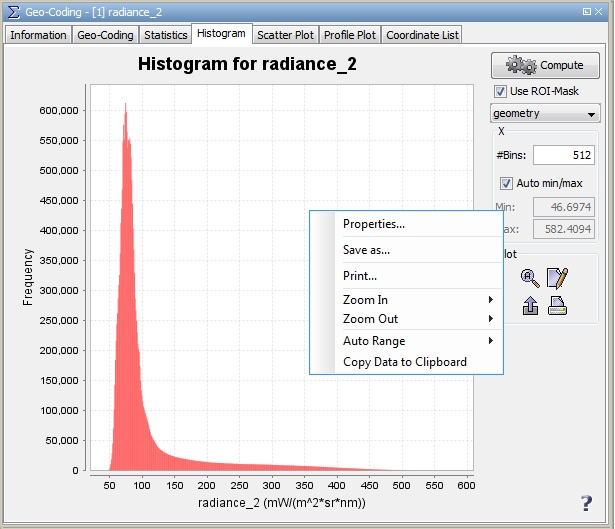

| Histogram | |
This dialog displays a histogram for the selected band. If a ROI is defined, you may restrict the computation to the pixels within that ROI.
Note: A mouse right-click within the histogram diagram brings up a context menu with the item Copy data to clipboard. This will copy the diagram data as tabulated text to the system clipboard. The copied text can then be pasted directly into a spreadsheet application (e.g. Microsoft® Excel).
